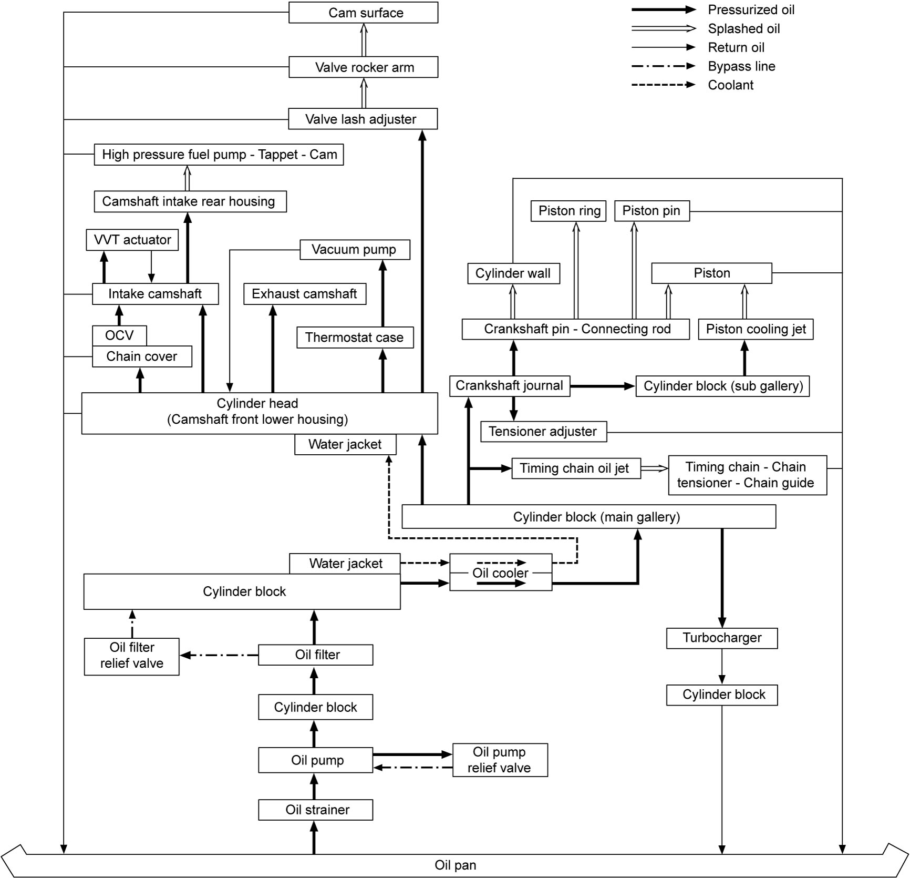

1E
| Engine Lubrication Description |
The oil pump is of a trochoid type, installed in the timing chain cover and is driven by the crankshaft.
Oil is drawn up through the oil pump strainer and passes through the pump to the oil filter. The filtered oil flows into an oil cooler at the upper part and then to the main oil gallery in the cylinder block. Oil passing through the oil cooler is cooled by flowing coolant from water jacket in the cylinder block to the cylinder head. Oil from the main gallery is supplied to the crankshaft main bearings and cylinder head. An oil passage is connected to the sub gallery via crankshaft main bearing portion. The following devices are lubricated or pressurized by delivered oil as follows.
•Crankshaft journal
Main bearings supporting crankshaft journals are lubricated and the oil is supplied to the connecting rod bearings by means of intersecting passages drilled in the crankshaft, and then splashed from the big end of each connecting rod to lubricate cylinder wall, piston pin, piston and piston rings.
•Timing chain oil jet
Oil from an oil passage between the main gallery and main bearing is supplied to the jet and injected for lubrication of the timing chain, timing sprockets, timing chain tensioner and timing chain guide.
•Piston cooling jet
Oil from the sub oil gallery is injected through the jet to each piston for additional piston cooling.
•Tensioner adjuster
Oil from an oil passage connected to the main bearing provides pressure to the tensioner adjuster for adjustment of the chain tension.
•Cylinder head
Oil from the main gallery is supplied to OCV through the timing chain cover and the rest of oil goes up to camshaft front lower housing and then divided into passages drilled in the cylinder head at intake side and exhaust side independently.
Oil is supplied through a turbocharger oil feed pipe connected to the main gallery by an oil union bolt providing mesh filter.
The oil pump is equipped with an oil relief valve. This valve relieves oil pressure when the pressure exceeds specified value.
The oil filter provides a relief valve to bypass oil when oil pressure exceeds the filter’s specification caused by clogging of the filter element due to poor maintenance (without changing the filter as scheduled). In this situation, dusty oil will circulate in the engine without filtration and causes the engine damage.

Main bearings supporting crankshaft journals are lubricated and the oil is supplied to the connecting rod bearings by means of intersecting passages drilled in the crankshaft, and then splashed from the big end of each connecting rod to lubricate cylinder wall, piston pin, piston and piston rings.
•Timing chain oil jet
Oil from an oil passage between the main gallery and main bearing is supplied to the jet and injected for lubrication of the timing chain, timing sprockets, timing chain tensioner and timing chain guide.
•Piston cooling jet
Oil from the sub oil gallery is injected through the jet to each piston for additional piston cooling.
•Tensioner adjuster
Oil from an oil passage connected to the main bearing provides pressure to the tensioner adjuster for adjustment of the chain tension.
•Cylinder head
Oil from the main gallery is supplied to OCV through the timing chain cover and the rest of oil goes up to camshaft front lower housing and then divided into passages drilled in the cylinder head at intake side and exhaust side independently.
—Intake VVT actuator
Oil is supplied through the timing chain cover, OCV, cylinder head, camshaft front lower housing, camshaft front upper housing and intake camshaft for the camshaft timing control.
—Camshaft journal
Oil is supplied through the passages in the cylinder head at intake side and exhaust side except intake No.1. Intake No.1 journal is lubricated by oil from OCV through passages in camshaft front upper housing.
—Hydraulic lash adjuster
Through the same passages for the camshaft journals, oil is supplied. From top of each hydraulic lash adjuster, oil is injected to the valve rocker arm according to the stroke.
—Valve rocker arm and cam surface
Splashed oil from top of the hydraulic lash adjuster through the valve rocker arm lubricates the valve rocker arm including its roller bearing and corresponding cam surface.
—High pressure fuel pump, tappet, roller and cam
Oil is injected through a small hole drilled in camshaft intake rear housing to the high pressure fuel pump, tappet, roller and cam.
—Vacuum pump
Oil is supplied from intake side oil passage in the cylinder head passing through the thermostat case.
•TurbochargerOil is supplied through the timing chain cover, OCV, cylinder head, camshaft front lower housing, camshaft front upper housing and intake camshaft for the camshaft timing control.
—Camshaft journal
Oil is supplied through the passages in the cylinder head at intake side and exhaust side except intake No.1. Intake No.1 journal is lubricated by oil from OCV through passages in camshaft front upper housing.
—Hydraulic lash adjuster
Through the same passages for the camshaft journals, oil is supplied. From top of each hydraulic lash adjuster, oil is injected to the valve rocker arm according to the stroke.
—Valve rocker arm and cam surface
Splashed oil from top of the hydraulic lash adjuster through the valve rocker arm lubricates the valve rocker arm including its roller bearing and corresponding cam surface.
—High pressure fuel pump, tappet, roller and cam
Oil is injected through a small hole drilled in camshaft intake rear housing to the high pressure fuel pump, tappet, roller and cam.
—Vacuum pump
Oil is supplied from intake side oil passage in the cylinder head passing through the thermostat case.
Oil is supplied through a turbocharger oil feed pipe connected to the main gallery by an oil union bolt providing mesh filter.
The oil pump is equipped with an oil relief valve. This valve relieves oil pressure when the pressure exceeds specified value.
The oil filter provides a relief valve to bypass oil when oil pressure exceeds the filter’s specification caused by clogging of the filter element due to poor maintenance (without changing the filter as scheduled). In this situation, dusty oil will circulate in the engine without filtration and causes the engine damage.

 "Expand image")